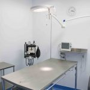
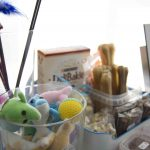
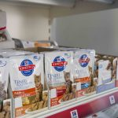
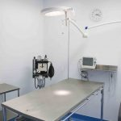
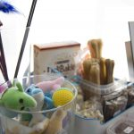
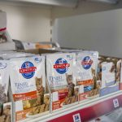

Nuestras mascotas son parte de nuestra familia y se merecen ser tratados como tales.
Por eso desde la clínica Puertochico trabajamos cada día no solo para ofrecerte un servicio médico completo y de calidad, sino para hacerlo de forma comprensiva y cercana tanto para las mascotas como para sus propietarios.
Nuestro equipo está en formación contínua para mantener la práctica clínica al máximo nivel profesional, permaneciendo al corriente de los últimos avances médicos y técnicos en todo momento.Nos servimos de los equipos más modernos y los últimos avances en la medicina y farmacia veterinaria para realizar nuestro trabajo ofreciendo así un diagnóstico preciso y una medicina eficaz accesible para la mayoría de los propietarios.
 





-
Medicina general
- Nuestro equipo veterinario atenderá los problemas o síntomas que observes en tu mascota; mediante una exploración exhaustiva y las pruebas necesarias llegará a un diagnóstico y prescribirá el tratamiento más adecuado para tu mascota.
-
Medicina preventiva
- La prevención es la mejor forma cuidar de la salud de tu mascota. Protégela mediante vacunas, desparasitaciones y chequeos periódicos. Especialmente importante en el caso de mascotas de edad avanzada.
-
Diagnóstico por Imagen
- Contamos con servicio de radiología y ecografía para llegar a un diagnóstico acertado en el menor tiempo posible.
-
Ánalisis clínicos
- Disponemos de un laboratorio completamente equipado donde poder realizar analíticas sanguíneas, anális de orina, coprológicos, citologías, raspados, tricogramas y test serológicos.
-
Cirugía general
- Disponemos de un quirófano completamente equipado para la realización de todo tipo de cirugías de tejidos blandos manteniendo al paciente monitorizado en todo momento. La seguridad del paciente es nuestra prioridad.
-
Hospitalización de día
- Contamos con una sala de hospitalización donde los pacientes pueden recuperarse y descansar cómodamente mientras estar permanentemente controlados por nuestro personal.
-
Odontología
- Ofrecemos una revisión dental gratuita para valorar el estado de salud dental de tu mascota. Contamos con los medios para realizar limpiezas de boca, extracciones, radiografías dentales y cirugía bucodental.
-
Medicina felina
- Los gatos no son perros pequeños, sabemos lo especiales que son y el estrés que sufren cada vez que salen de casa, nuestro equipo empleará las técnicas adecuadas para su manejo en un entorno lo más relajado posible. Además estamos especialmente formados en el diagnóstico y tratamiento de las patologías felinas.
-
Asesoramiento nutricional
- Disponemos de una selección de productos de alimentación de alta gama. Nuestro equipo te asesorará a la hora de decidir cual es el la mejor dieta para tu mascota teniendo en cuenta las características propias de su raza, su estado de salud y sus preferencias.
-
Tienda especializada
- Disponemos de todo tipo de accesorios para tu mascota así como juguetes, productos de aseo e higiene, golosinas y mucho más. Nuestro equipo te asesorará personalmente en la elección de los productos más adecuados para tu mascota.